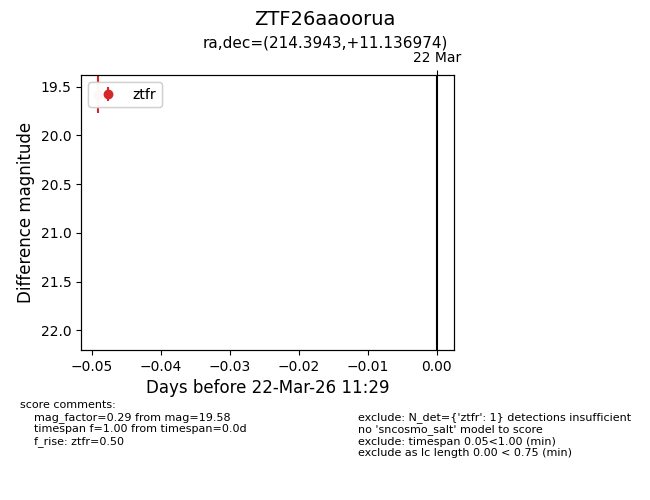
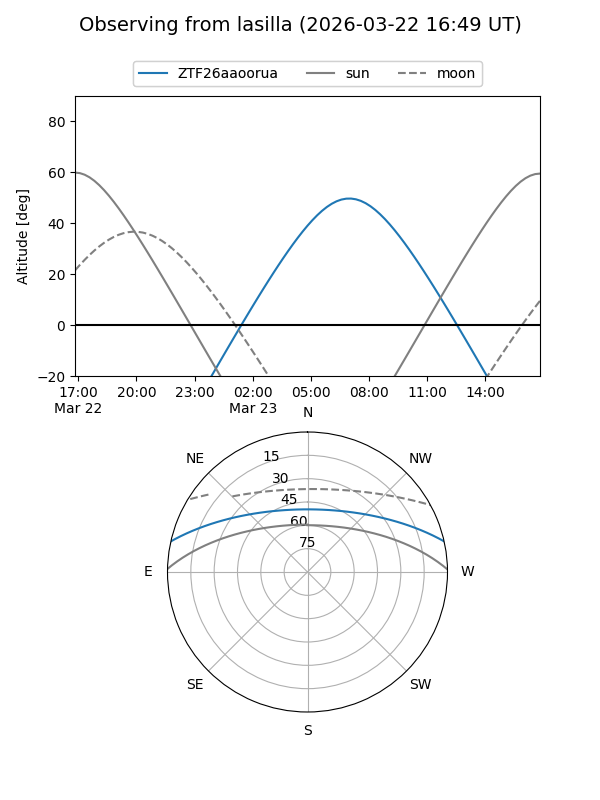
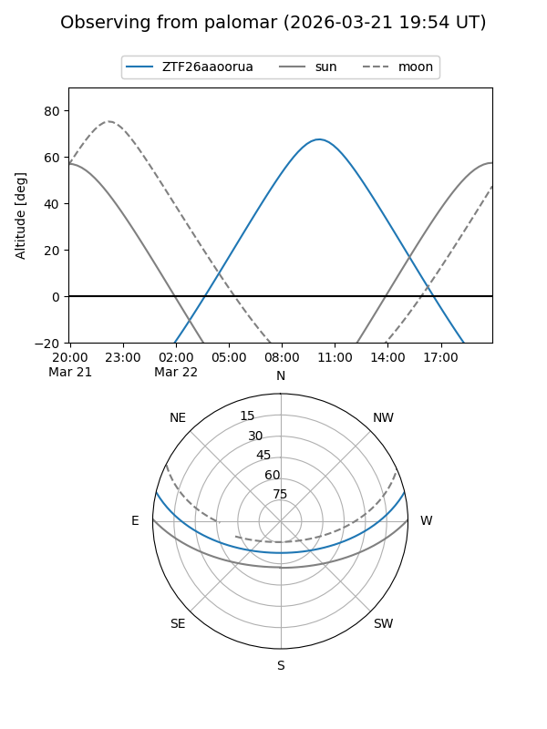

ZTF26aaoorua
Target ZTF26aaoorua at 2026-03-22 11:31
Aliases and brokers:
FINK: link
Lasair: link
ALeRCE: link
alt names
ZTF26aaoorua (ztf,fink_ztf)
Coordinates:
equatorial (ra, dec) = 214.3943,+11.13697
equatorial (HMS+DMS) = 14:17:34.62,+11:08:13.11
galactic (l, b) = (358.7863,+64.20383)
Flags:
Photometry:
last ztfr=19.58
1 ztfr detections
Lightcurve

Visibility


Additional plots